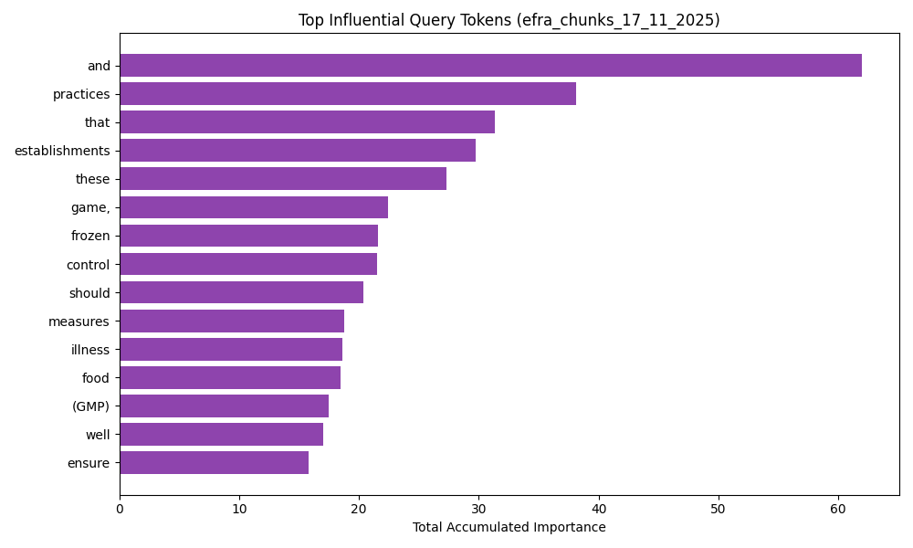
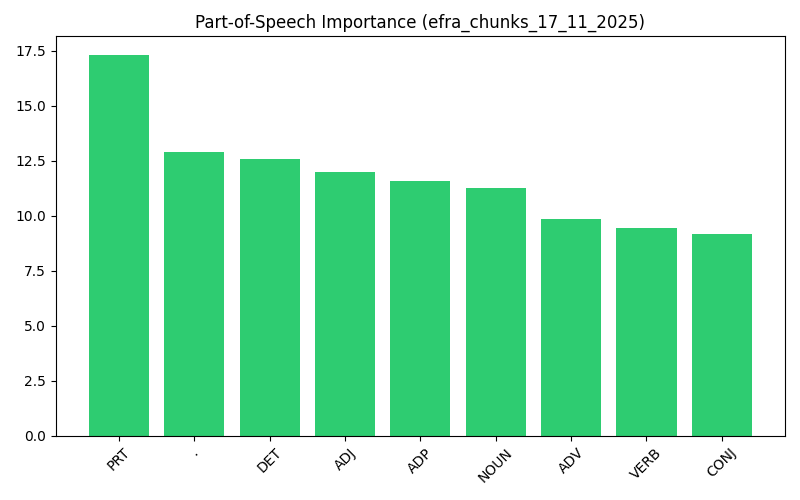
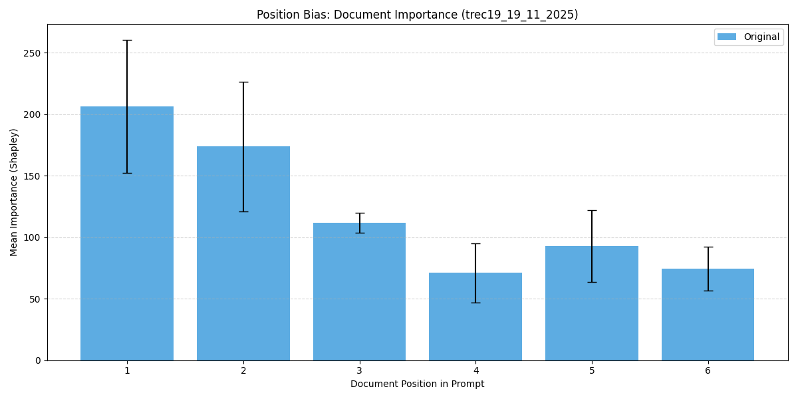
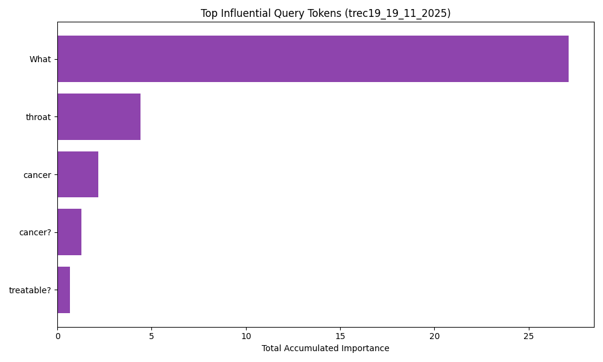
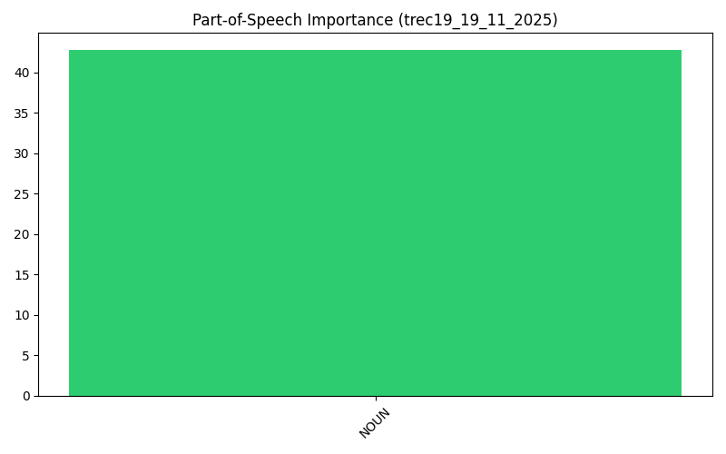

RAG Pipeline Comparative Analysis
Generated on 2025-11-24 13:18
Experiment: efra_chunks_17_11_2025

Position Bias Analysis: Comparison of document importance based on its position in the prompt.
If 'Original' and 'Randomized' both show a downward trend, the model has a Primacy Bias (favors the first thing it reads).
If 'Randomized' is flat or different, the model might be attending to content rather than position.
If 'Original' and 'Randomized' both show a downward trend, the model has a Primacy Bias (favors the first thing it reads).
If 'Randomized' is flat or different, the model might be attending to content rather than position.

Top Influential Tokens: The specific words (excluding stop words) that accumulated the most importance across all queries. These are the 'drivers' of your model's outputs.

Part-of-Speech Impact: Which grammatical roles drive the model's generation? High importance on Nouns/Verbs indicates content focus; high importance on Determiners/Prepositions might indicate noise.
Detailed Logs (efra_chunks_17_11_2025)
| Condition | File | Type | Links |
|---|---|---|---|
| original | Llama-3.1-8B-Instruct_qid_0 | generation | Detailed View | Folder |
| original | Llama-3.1-8B-Instruct_qid_1 | generation | Detailed View | Folder |
Experiment: trec19_19_11_2025

Position Bias Analysis: Comparison of document importance based on its position in the prompt.
If 'Original' and 'Randomized' both show a downward trend, the model has a Primacy Bias (favors the first thing it reads).
If 'Randomized' is flat or different, the model might be attending to content rather than position.
If 'Original' and 'Randomized' both show a downward trend, the model has a Primacy Bias (favors the first thing it reads).
If 'Randomized' is flat or different, the model might be attending to content rather than position.

Top Influential Tokens: The specific words (excluding stop words) that accumulated the most importance across all queries. These are the 'drivers' of your model's outputs.

Part-of-Speech Impact: Which grammatical roles drive the model's generation? High importance on Nouns/Verbs indicates content focus; high importance on Determiners/Prepositions might indicate noise.
Detailed Logs (trec19_19_11_2025)
| Condition | File | Type | Links |
|---|---|---|---|
| original | Llama-3.1-8B-Instruct_qid_31_1 | generation | Detailed View | Folder |
| original | Llama-3.1-8B-Instruct_qid_31_2 | generation | Detailed View | Folder |
Experiment: trec19
Detailed Logs (trec19)
| Condition | File | Type | Links |
|---|---|---|---|
| retrieval | query_31_1 | retrieval | Detailed View | Folder |
| retrieval | query_31_2 | retrieval | Detailed View | Folder |
Experiment: efra_06_11
Detailed Logs (efra_06_11)
| Condition | File | Type | Links |
|---|